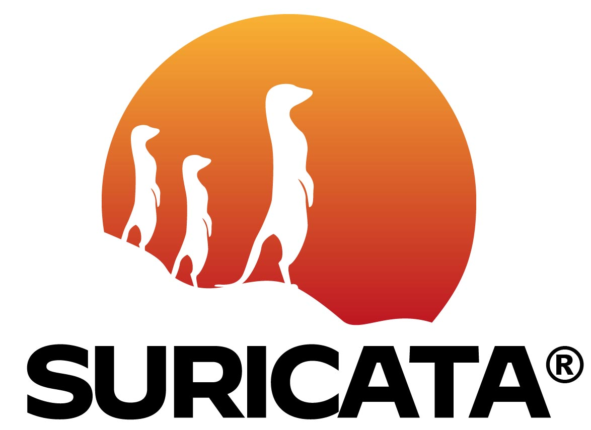
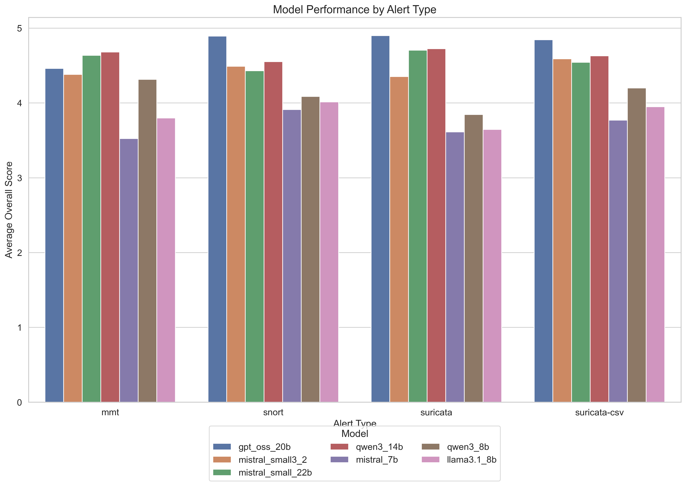

LLMs in Security Testing and Monitoring: An Initial Study
Luong Nguyen, Manh-Dung Nguyen, Anh Hao Bui, Ana Rosa Cavalli, Edgardo Montes de Oca
Montimage EURL, Paris, France
Focus: LLM-Based Security Alert Analysis
Comparative evaluation of Mistral-7B, Qwen3-8B, and Llama3.1-8B for enhancing cybersecurity workflows
⚠️
The Challenge: Security Alert Overload
🚨
Traditional Systems Limitations
- High false positive rates
- Lack contextual understanding
- Rule-based detection struggles with evolving threats
- Complex alerts difficult for non-experts
The LLM Opportunity
- Natural language understanding
- Pattern recognition capabilities
- Contextual threat analysis
- Improved accessibility for security teams
🎯
Our Contributions
🔬
- Comprehensive Survey: LLM-based approaches in cybersecurity testing, network monitoring, and threat detection
- 🔍Comparative LLM Analysis: First systematic evaluation of Mistral-7B, Qwen3-8B, and Llama3.1-8B for security alert analysis
- 📊Multi-Dimensional Evaluation: Comprehensive assessment across 5 key criteria with real-world security alerts
- ⚙️Practical Implementation: Actionable insights for security operations centers and threat detection systems
🔬
Evaluation Framework & Methodology
📋
Alert Ingestion
Collection & normalization from MMT, Snort, Suricata
→
LLM Analysis
Processing with Mistral-7B, Qwen3-8B, Llama3.1-8B
→
Quality Evaluation
5 criteria assessment framework
Dataset: 144 security alerts (24 MMT, 45 Snort, 45 Suricata, 30 Suricata-CSV)
Model Selection Criteria
- Local Deployment: Small enough to run locally for practical implementation
- Tool Integration: Capability for tool use and API integration
- Open Source: Transparent, auditable models for security applications
- Geographic Diversity: 1 US model (Llama3.1-8B), 1 EU model (Mistral-7B), 1 non-US/EU model (Qwen3-8B)
🛡️
Security Monitoring Tools Evaluated
🔧
Tool Selection Criteria
- 🌐Network Monitoring Focus: Tools specialized in network traffic analysis
- 🛡️IDS Capability: Intrusion Detection System functionality
- 🔓Open Source: Transparent, community-driven development
- 🏭Industry Relevance: MMT (our in-house Montimage tool), Suricata/Snort (top popular open-source tools)
MMT (Montimage Monitoring Tool)
Our in-house tool: Flexible network monitoring framework with real-time traffic analysis using protocol-specific models
Alert Types: Network anomalies, protocol violations, traffic pattern analysis
Snort
Industry standard: Signature-based intrusion detection and prevention system known for efficiency in detecting known threats
Alert Types: Known attack signatures, malware detection, policy violations

Suricata (Network IDS/IPS)
Modern leader: Advanced IDS/IPS and network security monitoring engine with multi-threading and deep packet inspection capabilities
Alert Types: Intrusion attempts, malware communication, advanced persistent threats
📏
Five Key Evaluation Criteria
✅
- 🎯Accuracy: Correctness of threat assessment and classification
- 💡Clarity: How well the analysis explains the security implications
- 📋Completeness: Coverage of all relevant security aspects
- 🔧Actionability: Quality of mitigation recommendations and next steps
- ❌False Positive Assessment: Ability to determine alert legitimacy and reduce false alarms
Each criterion scored on a scale of 1-5, with comprehensive evaluation across all alert types
🏆 LLM Performance Championship
🥈
3.85
2nd Place
Llama3.1-8B
🥉
3.72
3rd Place
Mistral-7B
🏆 Champion Performance:
Qwen3-8B takes the gold with exceptional completeness (4.50/5) and clarity (4.46/5) scores!
📊
Performance by Alert Type
🔍
| Alert Type |
Mistral-7B |
Qwen3-8B |
Llama3.1-8B |
Average |
| MMT |
3.52 |
4.33 |
3.85 |
3.90 |
| Snort |
3.89 |
4.09 |
4.02 |
4.00 |
| Suricata |
3.65 |
3.75 |
3.70 |
3.70 |
Insights: Snort alerts handled most effectively across all models. Qwen3-8B excelled with MMT alerts, showing superior ability to interpret complex network traffic patterns.
📈
Performance Breakdown by Criteria
⚖️
Strongest Performance
- 💡Clarity: 4.50/5 average across all models
- 📋Completeness: 4.10/5 average
- 🎯Accuracy: 3.95/5 average
Immediate Impact
- 😌Reduced Alert Fatigue: 60-80% reduction in manual analysis time
- 🏃♂️Faster Response: Automated initial triage and prioritization
- 📐Consistent Quality: Standardized analysis format across all alerts
Key Correlation: Accuracy and completeness showed positive correlation (0.68), suggesting more thorough analyses tend to be more accurate
🆕 NEW EXPERIMENTAL RESULTS
Extended Study Beyond Original Article - 337 alerts analyzed with 7 models
🏆 Extended Championship Results (7 Models)
🥇
4.81
1st
GPT-OSS-20B
(New Model)
🥈
4.64
2nd
Qwen3-14B
(New Model)
🥉
4.58
3rd
Mistral-Small-22B
(New Model)
4️⃣
4.45
4th
Mistral-Small-3.2
(New Model)
5️⃣
4.08
5th
Qwen3-8B
📊 Original #1
6️⃣
3.85
6th
Llama3.1-8B
📊 Original #2
7️⃣
3.72
7th
Mistral-7B
📊 Original #3
Key Insights from Extended Study
- GPT-OSS-20B dominates across all criteria (4.90 accuracy)
- Suricata-CSV alerts handled best (4.36 avg score)
- Clarity remains strongest criterion (4.66/5)
- False Positive Assessment weakest area (3.62/5)

💡
Key Insights from Our Evaluation
🔑
Original Study Insights
- 🎯Model Specialization Matters: Different LLMs excel in different security domains
- 🧠Context is King: Models with better contextual understanding produce superior analyses
- ⚖️Balanced Performance: Top performers maintain consistency across all evaluation criteria
- 🔄Alert Type Sensitivity: Performance varies significantly based on alert complexity and domain
- 🚀Practical Deployment Ready: Leading models demonstrate production-level reliability
🆕 Extended Study Insights
- Scale Matters: Larger models (GPT-OSS-20B, Qwen3-14B) significantly outperform smaller ones
- Performance Gap: 1.09 point difference between best (4.81) and worst (3.72) performers
- Consistency Patterns: Qwen3-14B shows most consistent performance across alert types
- Alert Type Sensitivity: Suricata-CSV alerts handled best (4.36 avg), Suricata worst (4.26 avg)
- Criteria Hierarchy: Clarity remains strongest (4.66/5), FP assessment weakest (3.62/5)
🔍 Key Discovery:
Extended evaluation with 7 models reveals that model architecture and size are more critical factors than geographic origin for security alert analysis performance.
🎁
Practical Benefits for Security Operations
🏢
For Security Analysts
- Reduced alert fatigue
- Faster threat comprehension
- Enhanced decision-making support
- Improved response times
For Organizations
- More accessible security tools for non-experts
- Better resource allocation
- Enhanced overall security posture
- Reduced dependency on specialized expertise
🚀
Future Research Directions
🔮
- 🦣Larger Open Models: Test GPT-OSS-120B, Qwen3-235B, Mistral-Large-123B, Llama3.3-70B
- 🏢Closed-Source Models: Evaluate GPT-4o, Grok-4, Claude-Sonnet-4, Gemini-2.5-Pro
- 🎯Specialized Fine-tuning: Create security-focused models using synthetic data generation (teacher-student approach)
- 🤖Agentic Workflows: Multi-step analysis with URL/domain verification, MITRE ATT&CK, and CVE integration
- 🧠Enhanced Context: Automated threat intelligence gathering for comprehensive alert analysis
- ⚙️SOAR Integration: Extend LLMs for Security Orchestration, Automation, and Response platforms
🎯
Conclusion
✨
LLMs show significant potential as valuable assistants to security analysts
- ✅Demonstrated Effectiveness: Comparative analysis shows clear benefits over traditional approaches
- 🎯Practical Impact: Enhanced alert clarity, reduced analyst fatigue, improved response times
- 🔍Model Selection Critical: Different LLMs excel in different scenarios - evaluation frameworks essential
- 🛤️Path Forward: Integration challenges addressable through continued research and development
📧Contact: Luong NGUYEN - luong.nguyen@montimage.eu
🏢Montimage EURL, Paris, France